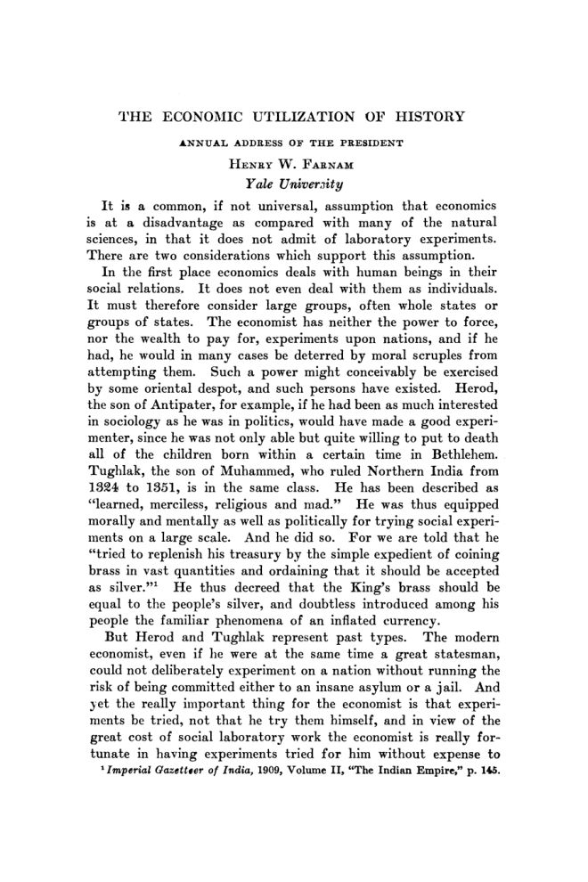

Farnam, 1911: a história como laboratório do economista
Leitura: 7 min
Farnam respondeu a Mill: a economia tem experimentos, feitos de graça pelos legisladores. Faltava fazer as perguntas certas e registrar os resultados, e por isso cada lei deveria trazer seu próprio relatório.


Henry W. Farnam começou seu discurso presidencial por um sultão. Tughlak, filho de Muhammed, governou o norte da Índia de 1324 a 1351 e tentou encher o tesouro cunhando latão em grande quantidade e decretando que fosse aceito como prata. Para Farnam, ele reunia as condições de um experimentador social: poder político, ausência de escrúpulos e uma hipótese a testar.
O ponto era provocar uma tese comum, a de que a economia está em desvantagem diante das ciências naturais porque não admite experimentos de laboratório. Farnam aceita que nenhum economista moderno poderia experimentar com uma nação sem acabar num hospício ou numa prisão. Mas, diz, o importante é que os experimentos sejam feitos, não que o economista os faça. E eles são feitos o tempo todo, de graça, pelos governos.
O exemplo é próximo da plateia. Durante a Guerra Civil, os dois lados, opostos em quase tudo, decretaram que o papel do governo valesse o ouro do povo, e repetiram o experimento de Tughlak. Farnam conclui que, quanto mais democrático o país, mais disposto ele parece a experimentar consigo mesmo.
Qual era a objeção de Mill?
A segunda objeção, que Farnam leva mais a sério, vem de John Stuart Mill: mesmo que os governos façam experimentos, eles ocorreriam em condições que não permitem conclusões. Mill examinou os métodos experimentais e concluiu que nenhum servia às ciências sociais. Para aplicar o método da diferença, seria preciso encontrar duas nações iguais em tudo, exceto, por exemplo, na presença de uma tarifa protecionista.
Farnam concede a dificuldade e muda a pergunta. Mill perguntava se a proteção é favorável à riqueza nacional, pergunta que ele considera vaga: riqueza total ou por habitante, massa ou distribuição? As grandes conquistas científicas, argumenta, vieram de perguntas cada vez mais específicas. Talvez seja impossível medir o efeito da tarifa sobre a riqueza do país, mas não o seu efeito sobre a distribuição entre classes, os preços dos bens protegidos, a conservação dos recursos naturais ou o crescimento dos monopólios.
Há também uma diferença entre experimento e simples observação. A maioria das leis econômicas, diz Farnam, se apoia numa teoria, e seu resultado é incerto. Francis Place acreditava que os excessos dos sindicatos vinham das restrições legais; sua campanha levou à revogação das leis inglesas contra associações em 1824, e o aumento das greves que se seguiu, segundo Farnam, desmentiu a teoria.
Por que os Estados Unidos seriam um bom laboratório?
Farnam compara o país a um hospital com 46 enfermarias gerais, cada uma sob direção médica própria, e uma grande enfermaria central para casos selecionados. Os estados legislam separadamente sobre uma gama ampla de assuntos, o que multiplica as unidades de comparação e amplia o uso do método da diferença. Somam-se as comunidades utópicas, das religiosas a Brook Farm e New Harmony, e as associações de reforma que pressionam legislaturas a testar suas ideias.
Ele aponta condições favoráveis para algo próximo do coeteris paribus, o célebre mantidas as demais condições. Os experimentos ocorreram num período curto, sem mudança profunda nos padrões culturais, e numa área de uniformidade política, com ambiente legal e social muito parecido apesar das diferenças de clima e solo. A língua inglesa e, exceto na Louisiana, o direito inglês formavam uma base comum.
O que os economistas ainda não estudavam?
Moeda, preços e juros já tinham rendido bons resultados. Posse da terra, métodos agrícolas, tributação e dívida pública ainda pediam estudo intensivo. O trabalho fora o menos explorado, embora o país tivesse vivido trabalho livre, servidão por contrato, escravidão e uma passagem súbita da escravidão para a liberdade. Farnam cita a observação de Frederick W. Taylor de que aumentos salariais de até 60% tornariam os homens mais aplicados, e acima disso muitos passariam a trabalhar de forma irregular.
Dali ele passa a uma pergunta que, diz, os economistas quase não faziam: qual o efeito da riqueza sobre a eficiência de quem a recebe. Os ricos ociosos seriam espécimes úteis para estudo, mas ninguém os media.
“Coletamos os orçamentos de operários, mas não os de frequentadores de clubes.” (“We gather the budgets of workingmen, but not of club men.”)
Quais eram os defeitos do laboratório?
Três. Primeiro, os tribunais podem anular leis por razões alheias ao seu conteúdo econômico, interrompendo o experimento, como se um antiviviseccionista invadisse o laboratório do biólogo. Segundo, os objetos de estudo falam: cada experimento vem acompanhado de uma babel de opiniões. Terceiro, e mais sério, os registros são inadequados. Há material imenso nos arquivos dos estados, das empresas e dos sindicatos, mas também imprecisão e dificuldade de medir.
A proposta central do discurso vem daí. Não basta contratar economistas para produzir estatísticas e monografias. Assim como os hospitais modernos têm laboratórios e prontuários, cada legislatura deveria ter um anexo econômico que reunisse não só o texto das leis, mas seus resultados.
“Toda lei que afete relações econômicas deve ser tratada como um experimento.” (“Every law affecting economic relations must be treated as an experiment.”)
O registro dos resultados, acrescenta, deveria estar previsto na própria lei. Farnam distingue esse uso da história da interpretação econômica da história: uma busca uma lei da história, a outra busca leis da economia. O exemplo é Galileu diante da lâmpada da catedral de Pisa. Um viajante descreveria cada detalhe artístico; Galileu viu nas oscilações uma força constante e chegou à lei do pêndulo.
O discurso termina com um aviso. A economia, antes chamada de ciência lúgubre por reformadores impacientes, desfrutava agora de popularidade, com classes grandes e verbas públicas para investigação. Farnam vê nisso o risco do diletantismo e pede a paciência, a exatidão e a devoção à verdade das ciências naturais.
Na minha leitura
Na minha leitura, o discurso antecipa com clareza a lógica do que hoje se chama experimento natural. Farnam aceita a crítica de Mill ao método da diferença em perguntas gerais, mas mostra que ela perde força quando a pergunta é estreita e as unidades de comparação são muitas. A variação entre estados com leis diferentes é exatamente o tipo de contraste que a econometria aplicada passou a explorar, e o hospital de 46 enfermarias é uma boa imagem do federalismo como fonte de dados.
A proposta de que a lei preveja o próprio registro é a parte mais prática. Ela desloca o problema da avaliação do economista para o legislador: se o dado não for coletado no momento da aplicação, nenhum método posterior o reconstrói. Fica em aberto, no discurso, como separar o efeito da lei do resto que muda ao mesmo tempo; a resposta de Farnam, a pergunta específica, é o primeiro passo desse problema.
Glossário
- Método da diferença
- na lógica de Mill, comparar dois casos iguais em tudo, exceto num fator, para atribuir a ele a diferença de resultado.
- Método das variações concomitantes
- na lógica de Mill, inferir relação causal de fenômenos que variam juntos.
- Coeteris paribus
- expressão latina para mantidas as demais condições, hipótese usual da análise econômica.
- Incremento não ganho
- valorização da terra que não resulta do trabalho ou do investimento do dono, que Mill propunha tributar.
- Leis contra associações (combination laws)
- leis inglesas que proibiam a organização de trabalhadores, revogadas em 1824.
Fontes
- The Economic Utilization of History: Annual Address of the President — Henry W. Farnam, Yale University (pp. 5–18). JSTOR · Internet Archive (PDF)
- Edição completa, com os demais artigos: Nº 118 do Arquivo.
Documento em domínio público (EUA, publicado antes de 1931), via JSTOR Early Journal Content e Internet Archive. Resumo e comentário do autor deste site, sem afiliação com a American Economic Association. Encontrou um erro? Escreva: a correção é publicada no próprio texto, com data.
↑ Nº 118 · Washington, 1911: tarifa medida, orçamento federal e a história como teste Emery × Willis, 1911: pode a ciência calcular a tarifa? →